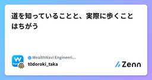
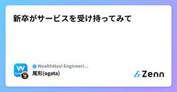
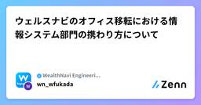
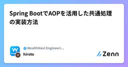
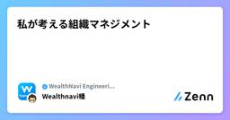
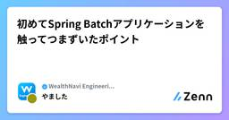
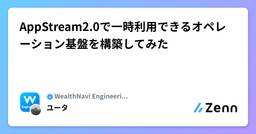

WealthNavi Engineering Blogのフィード
https://zenn.dev/p/wn_engineering
ウェルスナビの開発に関する記事を定期的に発信しています。 「ものづくりする金融機関」への取り組みを知っていただければ幸いです。
フィード
成長し続けるサービスのAurora負荷への取り組み
WealthNavi Engineering Blogのフィード
はじめにこんにちは。2024年4月より新卒で入社した齋藤です。システム基盤チームでインフラを担当しており、普段はロボアドバイザー（以下ロボアド）やデータベース周りの改善に取り組んでいます。今回は、SRE meetup 〜サービス事業会社のSREが向き合う課題〜で登壇した内容についてご紹介します。https://www.docswell.com/s/WN_Tech-PR/5EXN26-2024-08-27-124305 現状の課題ロボアドでは、データベースにAmazon Aurora MySQLを利用しており、アプリケーションは90個以上、バッチに至っては1日に300個以上...
2時間前

道を知っていることと、実際に歩くことはちがう
WealthNavi Engineering Blogのフィード
はじめにウェルスナビの等々力です。今年の夏にマネージャー/テックリードの役割で入社して5ヶ月目に入りました。ようやくウェルスナビにも慣れてきた感覚を持ち始めた段階です。自分への戒め(？)や初心を忘れないことを兼ねて、大切にしている(つもりだけどおろそかにしやすい)心構えを整理したいと思います。 道を知っていることと、実際に歩くことはちがう"There's a difference between knowing the path and walking the path."「道を知っていることと、実際に歩くことはちがう」(映画マトリックスより)色々な捉え方があると思いま...
2時間前
安全なAuroraアップデートを目指して多段レプリケーションを構築した話
WealthNavi Engineering Blogのフィード
はじめにはじめまして。システム基盤グループでSREをやっている伊藤と申します。今回はAWS MySQL Auroraのメジャーバージョンアップグレードに対して、弊社が行う予定の手法に関して紹介いたします。 対象読者Aurora MySQLのアップグレードに関して興味がある方 背景2023年10月頃弊社でもAurora MySQL2系のサポート切れのことを把握し、2024/02月頃から影響調査などの対応を開始していきました。ダウンタイムを可能な限り短くするなどアップグレード時に重要視する項目、またその優先度に関しては、各サービスにおいて異なることかと思います。弊...
1日前

新卒がサービスを受け持ってみて
WealthNavi Engineering Blogのフィード
はじめにみなさん、こんにちは！！ロボアド開発グループ サービス機能開発チームの24卒尾形です。普段はアプリのAPIやサービスサイトの開発を行っていますが、今回はマメタスというサービスを受け持ち、実際に問い合わせ対応をした経験についてお話ししたいと思います。 マメタスとはマメタスは、おつりで資産運用ができる「少額積立」のアプリです。具体的には、マネーツリーという外部の個人資産管理サービスに登録されたクレジットカードや電子マネーの利用明細をもとに、おつりを自動的に計算し積み立てるアプリです。マネーツリーでユーザーの金融データを一元管理し、マメタスとの連携により簡単におつりを積...
2日前

ウェルスナビのオフィス移転における情報システム部門の携わり方について
WealthNavi Engineering Blogのフィード
はじめにこんにちは、ウェルスナビの深田です。普段は、CIT・コーポレートセキュリティというチーム（以降、CIT チームと呼称）に所属し、社内 IT・社内セキュリティといった、いわゆる情シスやコーポレート IT と呼ばれる領域を担当しています。２０１８年１１月にウェルスナビに入社し、前オフィスへの本社移転、上場対応、ゼロトラストセキュリティプロジェクト、現オフィスへの本社移転等を対応し現在に至ります。直近では前述した現オフィスへの本社移転に関する IT 全般（ネットワーク、監視カメラ、入退室システム、PBX 等）を１年間担当していました（２０２４年１０月２８日に移転完了）。 ...
3日前

Spring BootでAOPを活用した共通処理の実装方法
WealthNavi Engineering Blogのフィード
はじめに今年から新卒で入社したマーケティング開発チームの鷹野です。当チームでは主にフロントエンドの開発を担当していますが、最近はバックエンドの業務にも関わるようになり、Spring Boot を使った開発にも触れています。その中で、AOP（Aspect-Oriented Programming） という概念に触れ、ログの保存などの共通処理を簡易的に実装できることを学んだので、その実装方法をシェアしたいと思います。 AOP（Aspect-Oriented Programming）とはAOP（Aspect-Oriented Programming） とは、あらゆるオブジェクト...
4日前
JJUG CCCに初参加で初登壇してきたお話
WealthNavi Engineering Blogのフィード
初めて参加したイベントで登壇することに今年の3月にウェルスナビのサービス機能開発チームにジョインした村岡です。サービス機能開発チームは一般のお客さまが触れるWEBページやスマホアプリ、そしてそこから呼ばれるAPIを開発しているチームです。まだ入社したばかりの気分でしたが、気づけばもう年末が近づいてました。今回は、10/27(日)に開催された、日本Javaユーザーグループ/Japan Java User Group(JJUG)主催のイベント、「JJUG CCC 2024 Fall」に登壇することになり、その準備や当日のレポートを書いてみました。JJUG CCCは、例年2回...
5日前

私が考える組織マネジメント
WealthNavi Engineering Blogのフィード
はじめにシステム基盤グループの責任者をやっている幡です。当グループでは、SREやサイバーセキュリティ、コーポレートITなどのプロダクトおよびコーポレートの基盤に関するチームを統括しています。今回は、私がウェルスナビで移行錯誤しながら実践してきた「組織マネジメント」についてお話しさせていただきます。 対象読者組織のマネジメントをされている方マネジメントをこれから目指される、興味をお持ちの方 組織マネジメントについて大小様々な組織においてマネジメントを行なってきて感じていることは「マネジメントの目的は組織の大きさで変わるものではない」ということです。私がマネジメ...
5日前

初めてSpring Batchアプリケーションを触ってつまずいたポイント 1
1
WealthNavi Engineering Blogのフィード
はじめにはじめまして！ウェルスナビのやましたと申します！私は新卒でバックエンド開発エンジニアとして入社し、社内業務システムの開発を行っているチームに配属されました。当チームでは、社内業務システムの開発および定期的なリリース作業を行なっています。そこで扱っている社内業務システムは仮想サーバー（Amazon EC2）で構築されているため、私はコンテナ化されたシステム（Amazon ECS）のリリース作業を行った経験がありませんでした。そんな中、バッチ処理が実行されているコンテナ化されたシステムのリリース作業を担当することになりました。各Gitリポジトリ・クラスの責務の違いや処理...
6日前

AppStream2.0で一時利用できるオペレーション基盤を構築してみた
WealthNavi Engineering Blogのフィード
はじめにはじめまして、システム基盤チームでSREをしている森と申します。日々の業務で取り組んだことについて紹介いたします。弊社では機密情報を取り扱う業務において、セキュリティポリシーを定めています。このポリシーに基づき、認証方式や端末、利用場所などさまざまな観点から安全管理措置を徹底しています。今回、特定条件抽出したデータを他システムに連携したいという相談をマーケティングチームより受けました。相談を受けた当初の構成は下記の通りでした。この構成における課題は、既存の共用ファイルサーバーではディレクトリ単位でのIP制限や場所の管理ができないため、当社のセキュリティポリシー...
7日前

Spring Data JPAのリポジトリテスト作成までの流れと考え方
WealthNavi Engineering Blogのフィード
はじめに初めまして、バックエンドエンジニアの横山です！この記事では、JUnit5を使用したリポジトリテストを書くまでの流れやテストの書き方を、サンプルプロジェクトを通して解説していきます。今回想定しているJavaのバージョンは11と古めですが、JUnit5は最新のバージョン(2024/10/29時点)なので、JUnitにおいては大きな問題はないと思います。弊社では、Aurora MySQL バージョン2のサポート期間終了のため、Aurora MySQL バージョン3へのバージョンアップに伴うMySQL5.7からMySQL8.0.28へのアップグレード対応をしています。MySQ...
8日前
AWSセキュリティ成熟度モデルで自社AWS環境を評価した話
WealthNavi Engineering Blogのフィード
はじめにはじめまして！サイバーセキュリティチームの笠井です。普段は、CSIRT/SOC業務を中心に、脆弱性管理運用やクラウドサービス評価対応等の業務に従事しております。本記事では、AWSセキュリティ成熟度モデルを用いて、自社サービスの基盤プラットフォームであるAWS環境のセキュリティ対策状況を評価した際の取り組みを記載します。 対象読者本記事では以下の方を対象読者として記載しております。自社AWS環境のセキュリティ対策を担当されている方AWS環境のセキュリティ対策状況を全般的に評価したいと考えている方AWSセキュリティ成熟度モデルは聞いたことがあるが、使い方がイマ...
9日前
AWS Advanced JDBC Wrapperの導入時につまずいたこと
WealthNavi Engineering Blogのフィード
はじめに初めまして、ソフトウェアエンジニアリングチームの大谷です。今回は弊社でAurora MySQL バージョン2からバージョン3へのアップデートに伴い導入したAWS Advanced JDBC Wrapperに関して、導入時に直面した問題を中心にお話しします。AWS Advanced JDBC Wrapperは、Amazon Web Services（AWS）が提供するJava Database Connectivity（JDBC）ドライバーの拡張（ラッパー）です。このライブラリは、AWSのデータベースサービスとの接続を簡素化し、セキュリティとパフォーマンスを向上させるため...
10日前
Qodanaによる静的コード解析導入とガイドラインを整備した
WealthNavi Engineering Blogのフィード
WealthNavi アドベントカレンダー 10日目です。本日は 入社して1つ目のタスクとして行ったQodanaという静的コード解析の導入とガイドラインを整備した話となります。 QodanaとはQodanaはJetBrainsが提供している静的コード解析サービスです。類似のサービスにはSonarQubeやCodacyなどがあるかと思います。公式サイトによると以下の特徴をもっています。2500以上のコードチェックQodana の広範なインスペクションポートフォリオを使用して、パフォーマンスの問題、潜在的なバグ、未使用の宣言、わかりにくいコードコンストラクト、命名規則とス...
11日前
Auroraアップデートのユニットテストで直面した2つの問題
WealthNavi Engineering Blogのフィード
初めまして、今年4月に新卒としてウェルスナビにJOINしたバックエンドグループの藤原です。今回はAuroraアップデートのユニットテストで直面した2つの問題についてお話ししたいと思います。 Auroraのアップデートについて弊社では、データベースにAurora 2系（MySQL 5.7）を使用して開発を進めています。しかし、Aurora 2系は2024年10月31日に標準サポートが終了するため、現在、Aurora 3系（MySQL 8.0）への移行準備を進めています。 ユニットテストの作成/実施移行準備の一環として、新卒はSpringのRepositoryに関するユニッ...
12日前
金融未経験からウェルスナビバックエンドエンジニアへ
WealthNavi Engineering Blogのフィード
はじめに皆さん、こんにちは！ロボアド開発グループ サービス機能開発チームのユダです。現在、ウェルスナビでサービスサイトとAPIの開発に携わるバックエンドエンジニアとして働いています。ウェルスナビは私にとって3社目の職場ですが、金融業界で働くのはこれが初めてです。今回は、金融未経験だった私がどのようにしてウェルスナビに転職し、エンジニアとして成長してきたかをお話ししたいと思います。これまでの経歴や、入社後に感じた変化や挑戦についても共有しますので、ぜひ最後までお付き合いください。 今までの経歴ウェルスナビに入社するまでは色々ありましたので、少し経歴の話をさせてください！ ...
13日前
CloudFront経由のリクエストのみに制御する3つの手法
WealthNavi Engineering Blogのフィード
始めにはじめまして、2024年4月より新卒入社しました、システム基盤チームの安藤と申します。今回は、業務効率化を目指したAIアシスタント（チャットボット）基盤の構築において、CloudFrontを活用してオリジンへの直接アクセスを禁止する方法についてご紹介します。弊社では、社内ITサポートを提供するためのSlackチャンネルが存在し、社員がITに関する質問やサポートを求める際に活用されていますが、社員数の増加に伴い、質問に回答する担当者の負担が増加しているという課題がありました。この問題を解決するために、過去の質問内容や社内ドキュメントをBedrockを活用してナレッジベース...
14日前
ISMS事務局経験1年未満の私がISMS認証取得するまで
WealthNavi Engineering Blogのフィード
初めまして初めまして、ウェルスナビ きど と申します！ISMSの推進業務や情報セキュリティに関連した業務・研修をやってます！ この記事で紹介する内容ウェルスナビは今年の7月にISO/IEC 27001・27017認証（以後ISMS認証と記載します）登録を完了しました！この記事では「ISMS事務局をやったことあるが、いつもやってる作業がISMSの何と関係してるのかわからない！」「審査時に管理策番号で質問されてどんな回答何の資料出せばいいか戸惑ってしまう」「審査時期には各方面から不安や不満の声が漏れ聞こえるのでどうにかしたい」みたいな人の助け舟になるかもしれない施策と...
15日前
バックエンドエンジニア志望がフロントエンド業務を行ってみて
WealthNavi Engineering Blogのフィード
はじめにこんにちは、ウェルスナビの土本です。私は今年の4月に新卒として、バックエンド / インフラエンジニア志望としてウェルスナビに入社しました。しかし、IT研修などを通して主にWebフロントエンド業務を担当するWebフロント開発チームを志望し、配属となりました。この記事では、バックエンドエンジニア志望がなぜフロントエンドエンジニアを志望したのか、また開発を通じて得られたこと、バックエンド開発とフロントエンド開発で感じた違い、今後の課題などについて紹介させていただきます。バックエンドエンジニア志望だったけど、フロントエンド開発に興味が出てきたあなたに... Webフロント...
16日前
開発組織として取り組んだ2024年の技術広報活動を振り返ってみる
WealthNavi Engineering Blogのフィード
はじめにみなさん、こんにちは！ウェルスナビで技術広報を担当しているshoheiです。アドベントカレンダー4日目の今日は技術の話から少し離れて、2024年に開発組織として取り組んだ技術広報活動を振り返ってみたいと思います。 ウェルスナビにおける技術広報の歴史ウェルスナビではもともと、エンジニア・デザイナーの有志メンバーが集まってLT大会やブログの執筆、公開に取り組んでいました（← 現在の技術広報の前身）。ただ、「有志」ということもあり、主務である開発業務やデザイン業務が逼迫しているときは主務を優先していたため、不定期の活動になっていました。2023年5月に私が入社し、当時...
17日前